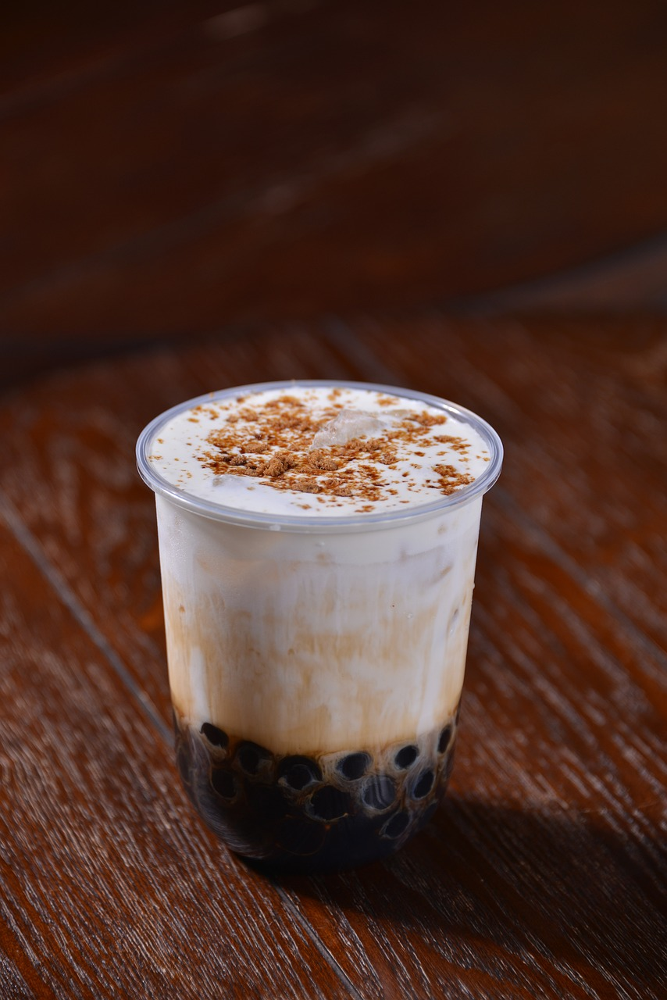

welcome!
hi, my name is Veronica! this is my personal website where i showcase my mini resume. enjoy reading through! scroll down for some fun facts
credit: here's a drawing of me :D
fun facts about me:
1. my favorite boba flavor is brown sugar milk tea. no debate.

2. i have two dogs yet my favorite animals are cats!